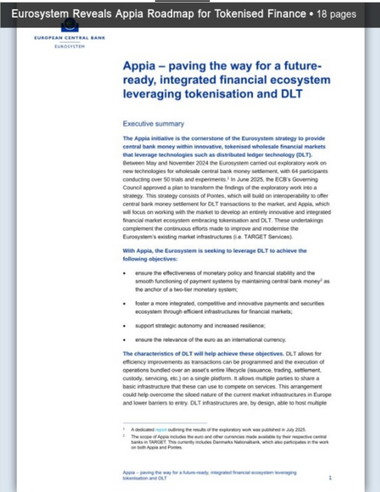
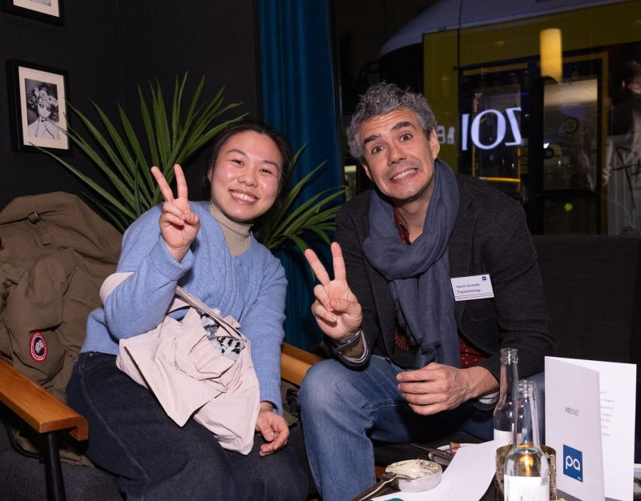
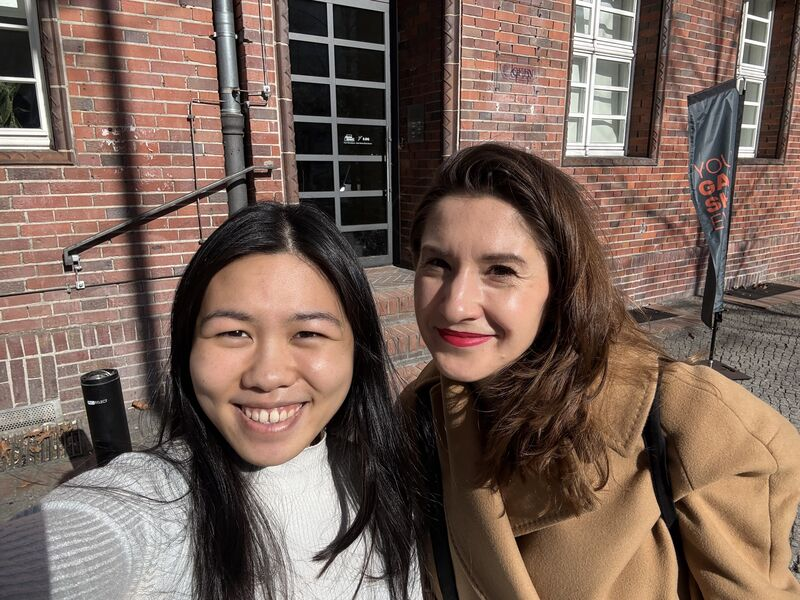
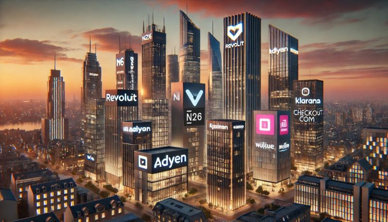
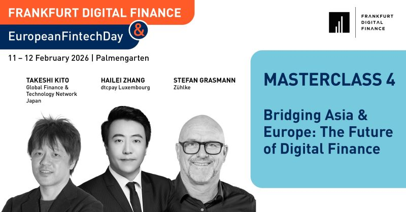

Life & Work in Europe
Europe
Highlights
A showcase of key moments, events, and milestones from Andralynn's life and work in Europe. Click any card to view the original post.

March 2026 · LinkedIn
European Financial Markets: Appia Report Takeaways
Sharing key insights from the Eurosystem's Appia roadmap — a strategic initiative shaping Europe's tokenised financial ecosystem and the future of central bank money in DLT markets.
View Post
March 2026 · LinkedIn
Featured at PA@Home Berlin
Featured by The Payments Association EU at their Berlin event — connecting with Ignacio Gironella Merino of Paymentology and representing GFTN in the heart of Europe's payments community.
View Post
March 2026 · LinkedIn
Most Impactful Night in Berlin
"Hands down, one of the most impactful nights I had ever since I touched down in Berlin!" — Discussed payments over drinks and tapas with Paymentology, Goldman Sachs alumni, and The Payments Association EU.
View Post
February 2026 · LinkedIn
Hosting at Spielfeld Digital Hub
Hosted Ewa Emilia Geresz from Venture Café Berlin at the GFTN Europe office at Spielfeld Digital Hub — building community and partnerships in Berlin's innovation ecosystem.
View Post
January 2026 · LinkedIn
Germany's FinTech Ecosystem
Exploring Germany's innovation landscape — from Stuttgart's industrial heritage to de:hubs and the country's growing fintech scene. "If regions like Stuttgart can align their industrial heritage with emerging fintech opportunities, Europe's position as a leader in innovation will be unstoppable!"
View Post
February 2026 · LinkedIn
Bridging Asia & Europe
Masterclass at Frankfurt Digital Finance on the future of digital finance — exploring digital asset ecosystems across Asia and Europe and building the next generation of financial infrastructure.
View Post